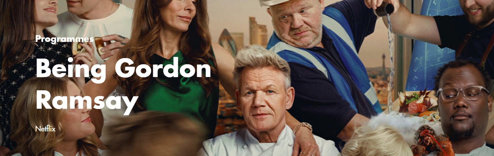
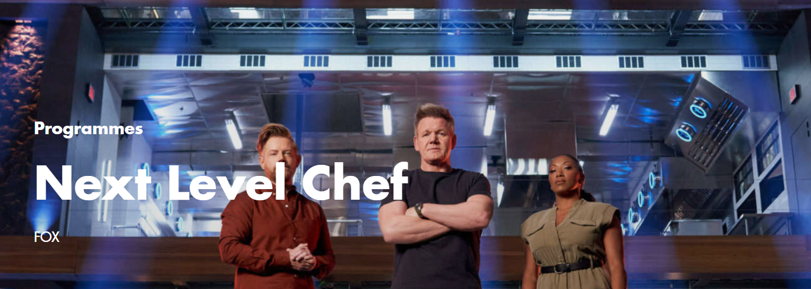
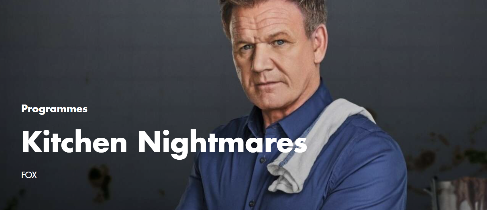

Over the last two decades, Gordon Ramsay has made a name for himself in the kitchen and on TV screens. The multi-Michelin-starred chef has trained with some of the world’s best cooks and run successful kitchens of all ages, all over the world. On February 18th, Ramsay will star at the center of a new documentary series that follows the lead-up to his biggest restaurant venture to date: the opening of five culinary experiences in London’s second tallest building, 22 Bishopsgate. Taking place over nine months, the series will provide exclusive access to the Ramsay family, as Gordon balances his various work commitments and life as a husband to his wife, Tana, and father to their six children.
Watch Here
Next Level Chef is the next evolution in cooking competitions, as Ramsay has designed a one-of-a-kind culinary gauntlet, set on an iconic stage like you’ve never seen. Over three stories high, each floor contains a stunningly different kitchen. From the glistening top floor to the challenging bottom of the basement, the ingredients will match the environment, because Ramsay believes the true test of great chefs is not only what they can do in the best of circumstances, but what kind of magic they can create in the worst!
Watch here
Gordon Ramsay’s Kitchen Nightmares returns for an all-new season of restaurant makeovers beginning Monday, September 25 (8:00-9:00 PM ET/PT) on FOX. Each episode follows Ramsay as he revamps a restaurant in crisis, exposing the stressful realities of running a successful food business. Now more than ever, restaurant owners are faced with seemingly insurmountable challenges, from health code violations and staffing issues to menu errors and kitchen conditions found only in nightmares. Ramsay is their restaurant 9-1-1 call and the last chance for their businesses to survive.
Watch hereFrom Studio Ramsay Global comes an all-new unscripted FOX series that takes culinary intervention to the next level: Gordon Ramsay’s Secret Service. Restaurateurs hoping for a quick fix or a social media glow-up are in for the surprise of their lives when famed culinary titan Gordon Ramsay trades in his signature chef knives for a state-of-the-art surveillance vehicle and cutting-edge spyware.
Watch here